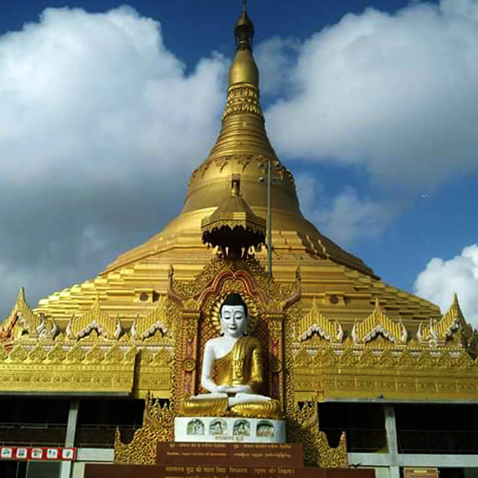
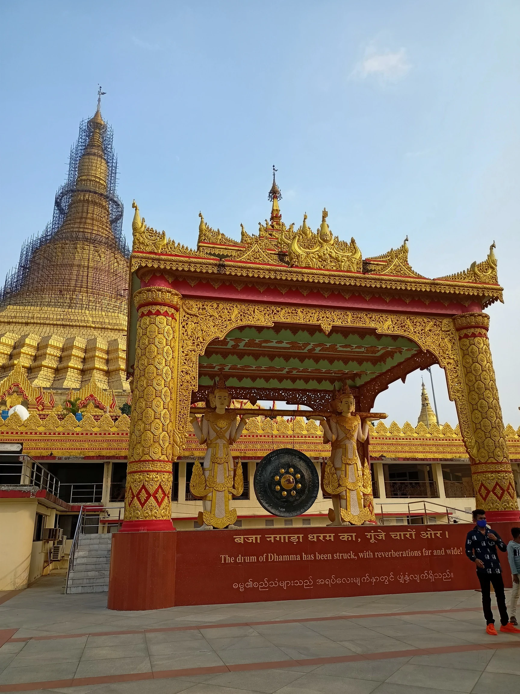
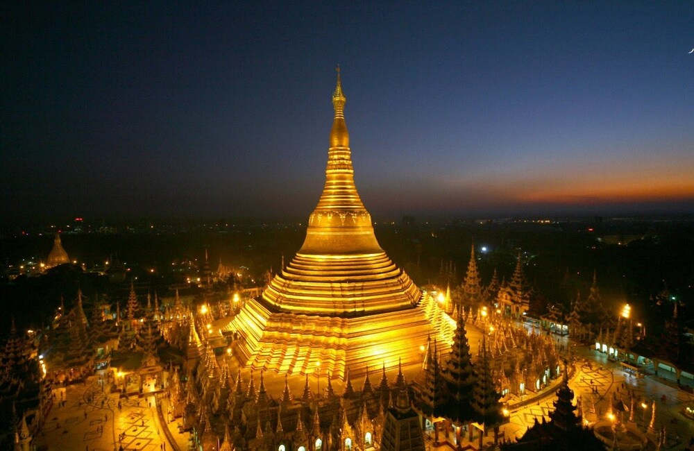
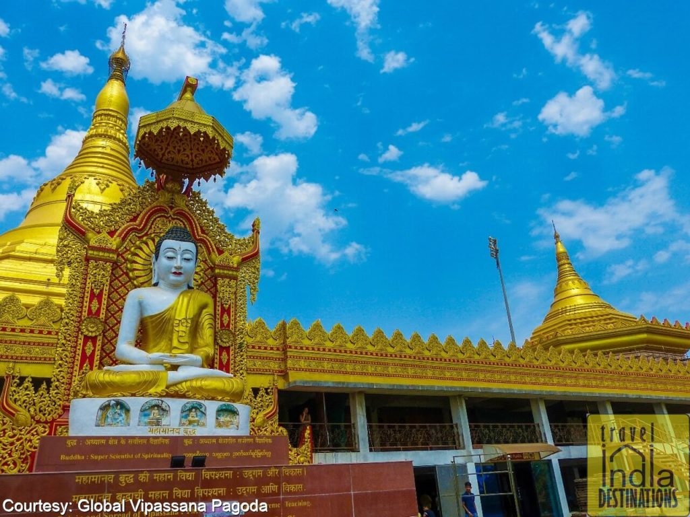

Global Vipassana Pagoda




🧘♂️ Introduction
The Global Vipassana Pagoda is a massive meditation center located near Gorai Creek. It promotes the ancient practice of Vipassana meditation taught by Gautama Buddha and serves as a symbol of gratitude towards him.
📌 Highlights
- World’s largest stone dome built without pillars
- Peaceful meditation hall with seating for 8,000
- Buddhist relics enshrined inside
- Free entry and guided tours
🕒 Best Time to Visit
- Early morning or before sunset
- Weekdays for less crowd
- During Buddha Purnima for special events
📷 Things to Do
- Attend meditation sessions
- Walk in peaceful gardens
- View exhibition on Buddha’s teachings
- Take ferry from Gorai for scenic ride